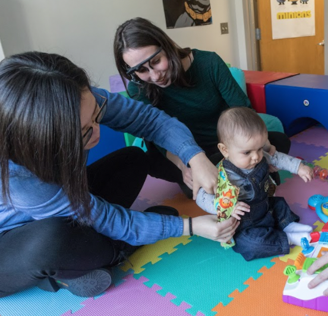

Hi. I'm Yayun Zhang.
I am a postdoc reseacher at the Language Development Department, Max Planck Institute for Psycholinguistics, Nijmegen, Netherlands. I received my Ph.D. degree in Developmental Psychology and Cognitive Science from Indiana University where I was supervised by Dr. Chen Yu .
I am interested in understanding how children learn language from the world around them. My work focuses on statistical language learning, and in particular understanding the cognitive and attentional processes that support language learning. In my research, I draw on a variety of methodologies, such as using head-mounted eye-trackers to collect learning input from the learners’ own view in order to understand how different everyday environments engage learning mechanisms and how learner’s own developing cognitive and attentional systems shape early language learning input.